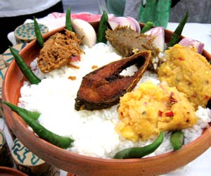
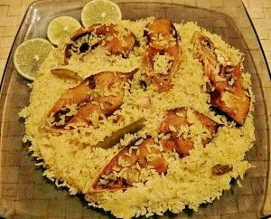

Tradiotional


Bangladeshi people follow certain rules and regulations while eating. It includes warm hospitality and particular ways of serving as well. This is known as Bangaliketa (Bengali: বাঙালি কেতা). The culture also defines the way to invite people to weddings and for dinner. Gifts are given on certain occasions. Bangaliketa also includes a way of serving utensils in a proper manner.Traditional food in Bangladesh reflects the country’s culinary past and its rich heritage influenced by the many empires and cultures that inhabited its land.Unlike other countries where modern takes of food are prevalent, almost all the food in Bangladesh is still traditional. Despite every household having its own recipes for the famous Bangladeshi recipes, the foundations remain the same.
CUSINE

Bangladeshi cuisine has over time been largely influenced by the Mughlai cuisine left behind by the Persian
Rulers. This has led Bangladeshi cuisine to include many rich aromatic dishes such as biriyani and korma that
requires the use of a large array of spices along with an extensive amount of ghee. Dhaka being the Mughal
Capital of the Bengal Subah (Which Includes the modern Bangladesh and the Indian states of West Bengal) was a
major trading center in South Asia, so many culinary styles from around the world influenced the city's cuisine.
After Dhaka became the capital of East Bengal, Bangladesh the populace began to adopt the cuisine of the city
with many unknown Persian, Turkish and Arabic influenced dishes becoming hugely popular.
SWEETS


BANGLADESH offers a rich variety of delicacies for every palate. The sweet tooth of Bengalis, as well as the variety of sweets and desserts available in the region, is astounding. While some of those quintessentially Bengali recipes and items have now found their way to the rest of the country, there are several Bengali sweets which have not reached their deserved potential and popularity yet.One of the most famous Bengali sweets, Roshogolla is a soft round mithai made out of Chhena and dipped into a sugary syrup. Rajbhog is a close cousin of this famed sweet, with a delicious stuffing in its centre that can be made of dry fruits, saffron, cardamom and so on. With this dessert, it is usually difficult to stop after devouring only one.